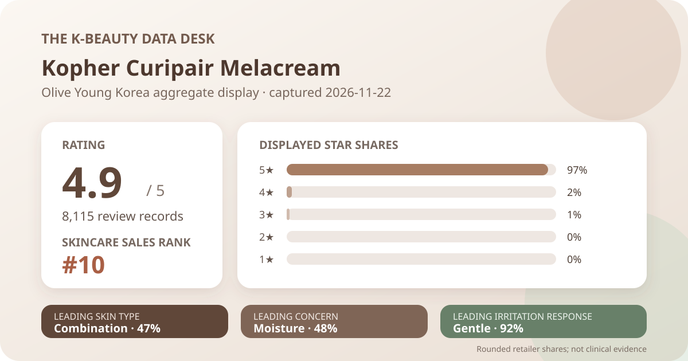
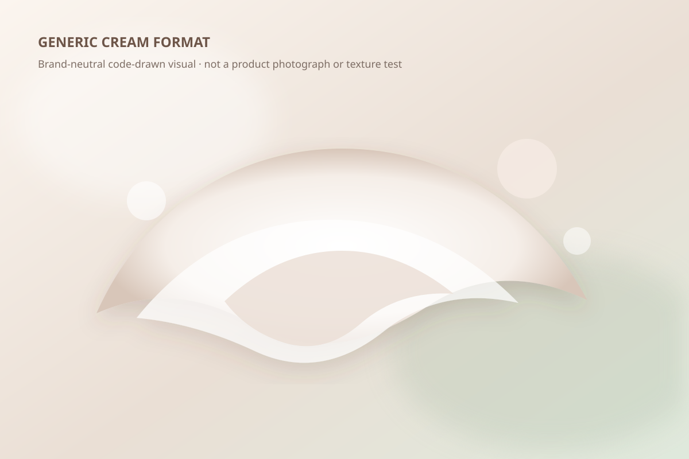

Data captured November 22, 2026. Olive Young Korea displayed “코페르 큐리페어 멜라크림 21ml기획(+4ml).” This article uses “Kopher Curipair Melacream” as a concise English label. It relies only on the live ranking, product identity, aggregate rating, displayed star shares, shopper polls, and a retailer-generated anonymous summary. It does not copy or translate individual reviews, names, profiles, or photographs, and it makes no claim of firsthand use.

The short version: Kopher Curipair Melacream appeared at number 10 in the captured skincare sales ranking. The ranking and detail titles agreed, while the product header and official review view both showed 4.9 out of 5 from 8,115 records. Five-star ratings represented 97% of the displayed distribution. Combination skin led the skin-type poll at 47%, moisture led the concern panel at 48%, and gentle led the irritation panel at 92%. These are favorable storefront signals, not proof that the cream changes pigmentation, improves radiance, hydrates, or suits a particular person.
The official display showed 4.9 stars from 8,115 review records. That is substantial volume for describing the current storefront signal: the average is high, and the visible distribution is concentrated heavily at the top. It remains observational retail feedback. It cannot isolate the cream from expectations, price changes, gifts, routines, climate, packaging, or the reasons people chose to leave feedback.
The captured listing was a promotional plan built around a 21 ml cream with an additional 4 ml. Records accumulated under the listing may span different prices, bundles, and formula or packaging moments. The interface did not expose a verified-buyer denominator, raw rating counts, or a method for separating comments about the formula from comments about shipping, value, or presentation.
The defensible conclusion is narrow: the captured listing had an unusually favorable aggregate rating across 8,115 records. That does not establish a change in melanin, spots, tone, radiance, wrinkles, hydration, or any clinical outcome, and it does not show superiority over another cream.
The official rows showed 97% five-star, 2% four-star, 1% three-star, and 0% each for two-star and one-star. These rounded shares total 100% and align with the 4.9 average. They should not be reverse-engineered into exact counts because the interface provided percentages rather than underlying row totals.
A displayed zero can conceal a small underlying share after rounding, so it does not prove that no low ratings exist. The distribution also describes satisfaction labels rather than the reasons behind them. It cannot tell us how long people used the cream, whether routines changed, or whether reviewers evaluated the same bundle under consistent conditions.
The displayed skin-type responses were 47% combination, 45% dry, and 8% oily. The rows total 100%. Combination skin led by only two percentage points, so the most useful reading is that combination and dry labels were both strongly represented in this response sample.
This is sample composition rather than a product-fit score. A person selecting “combination” may also experience seasonal dryness, localized oiliness, sensitivity, or an evolving routine. The platform did not disclose the poll denominator or matched outcomes by skin type, so the percentages cannot support a claim that either group benefits more.
The concern panel displayed 48% moisture, 44% wrinkle or brightening, and 8% soothing. The rows total 100%. Moisture led, but the wrinkle or brightening label was close behind. These are shopper-poll categories, not measurements of skin water content, wrinkle depth, melanin, spot area, color uniformity, or luminance.
No corneometer, colorimeter, imaging protocol, baseline, comparator, application schedule, or follow-up interval was part of the capture. The 48% moisture share is not a 48% hydration increase, and the 44% wrinkle or brightening share is not a response rate for either wrinkle or pigmentation change.
The irritation panel showed 92% gentle, 8% ordinary, and 1% felt irritation. The rows total 101% after independent rounding. The leading response is favorable, while the remaining rows matter because tolerance varies and the poll does not identify allergy, dose, application frequency, other products, or pre-existing skin conditions.
A retailer poll cannot predict fragrance sensitivity, contact allergy, active dermatitis, prescription use, a compromised barrier, or interactions with exfoliants, retinoids, acne treatments, sunscreen, and makeup. Anyone with known sensitivities should review the current regional ingredient disclosure and make an individual testing decision.
The retailer labeled 96% of an undisclosed recent-review subset as positive. Its anonymous automated summary grouped broad discussion around mild-feeling use, makeup adhesion or pre-makeup compatibility, and tone or glow impressions. These are retailer-generated aggregate themes, not direct quotes and not independent findings.
The interface did not disclose how many recent records entered the summary, how positive and negative labels were assigned, whether one record could contribute to multiple themes, or how representative that subset was of all 8,115 records. The themes identify recurring discussion areas, but they cannot establish prevalence across the full review base or verify an effect.

“Curipair Melacream” is the retailer-displayed product name. In general skincare language, a cream is a leave-on emulsion, but that category does not define thickness, spread, absorption, residue, scent, finish, or compatibility with sunscreen and makeup. The “Mela” element in a name does not provide an instrument result or a medical claim.
I did not open, dispense, spread, layer, or wear this cream. The local visual uses abstract folds to communicate a generic cream format without reproducing the package, cream color, or a real swatch. Actual sensory behavior depends on the current formula, amount, application method, skin condition, temperature, humidity, and surrounding routine.
The captured product title did not provide a verified active concentration, and this analysis did not independently audit the current formula. A product name cannot reveal which ingredients drive the finished product, their amounts, stability, delivery, or contribution to user experience. I therefore do not infer brightening agents, estimate concentrations, or assign a biological mechanism from the title.
Readers seeking current ingredient, allergen, fragrance, or regional-formula details should consult the package and the brand's current disclosure. Formula and labeling can change independently of accumulated review records, and the Korean promotional listing may not match every regional configuration.
Rank 10 describes one capture of Olive Young Korea's skincare sales list. It is not a clinical ranking or a claim that this is the tenth-best pigmentation product. Advertising, inventory, discounting, gifts, influencer exposure, seasonality, and short-term demand can move a listing rapidly.
The captured page showed a 21 ml cream plan with a 4 ml addition, a ₩35,700 reference price, and a ₩24,900 promotional price. Those details can change separately from the review aggregates. Before purchase, confirm the current seller, formula, volume, bundle contents, stock, expiry information, return terms, and checkout price on the live listing.
The captured official display showed 4.9 out of 5 from 8,115 records. Displayed star shares were 97% five-star, 2% four-star, 1% three-star, and 0% each for two-star and one-star.
Combination skin led at 47%, followed closely by dry at 45% and oily at 8%. These shares describe the displayed response sample and do not prove suitability.
No. The 44% figure is a retailer-displayed shopper-poll label, not an instrument measurement, controlled comparison, or quantified treatment result.
No. The 92% aggregate cannot predict allergy, sensitivity, routine interactions, or an individual's response. The rounded display also showed 8% ordinary and 1% felt irritation.
No. This article analyzes retailer-displayed aggregates only and uses brand-neutral vector artwork rather than a product or user photograph.
Source: Olive Young Korea product listing and official aggregate review statistics, captured November 22, 2026. Open the source product page.
Published by The K-Beauty Data Desk. The source does not independently verify every buyer's identity, and this page is an editorial analysis of retailer-displayed aggregates—not medical advice or a substitute for the current product label.
← All reviews · Review-volume rankings · Skin-poll explorer · Methodology